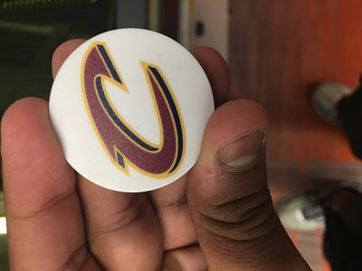
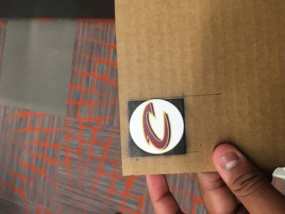
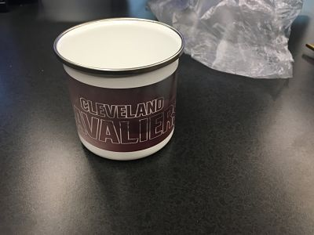

For this week, we got to use the UV printer, the sawgrass printer, and the garmat printer. For the UV printer I made a popsocket with the cavaliers logo on it. For the Garmat printer, I had to make a shirt that represents hudson or ohio so I made a shirt with the phrase, "There is no state like the Buckeye State," with a picture with the idea that ohio is the Buckeye state. With the sawgrass printer, I made a cup with the cleveland caveliers picture on it to show that I am a cavs fan.
  